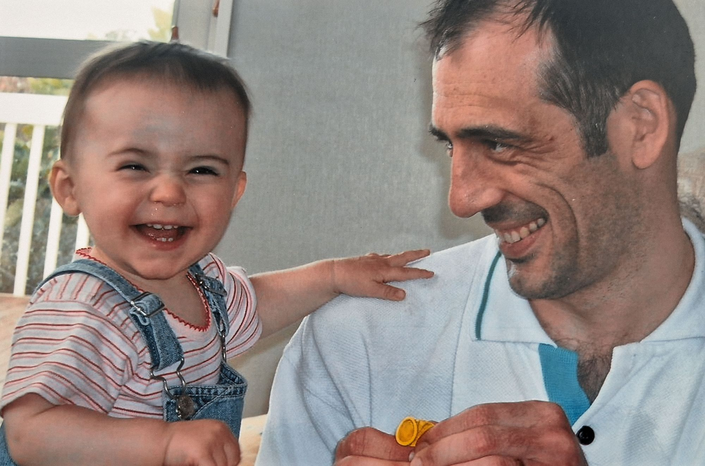

Kia Ora!
Welcome to my digital portfolio, take a wander and explore some of my past, and current, projects

About me
Kia Ora! My name is Campbell Smith and welcome to my portfolio.
My design practice is rooted in Media Design, exploring and trialling many different now-defined design practices, such as Interactive, Graphic, and Industrial Design. Through my degree at Te Herenga Waka, Victoria University, my design practice has rooted itself in human-centred design, through accessible design and AI exploration, in code and UX. I’m a passionate designer, keen on making enjoyable projects and products that help or inspire the world around me. My career goal is to work in Assistive Technologies, as when my dad developed motor neurone disease these were the types of designs he became reliant on, and I saw real impact in this and the wider health sphere.
Outside of designing you can find me with my family dog, hitting up some of Welly’s best walks, watching cheesy horror films, and reading a lot of books.
Some other quick fun facts about me:
- I keep a list of dog names in my phone notes app for SPCA and my future dogs
- My favourite film is Dead Poets Society, for its comfort and meaning
- My favourite book is Pride and Prejudice, having grown up with the 1995 BBC show
- I have a Percy Jackson tattoo; the series got me back into reading as a tween and is the start of my love of mythology
- I always have to have a touch of cinnamon in my coffee
- I always carry around sweets, after one time a supermarket co-worker broke up with her boyfriend on shift and one little barley sugar helped cheer her up